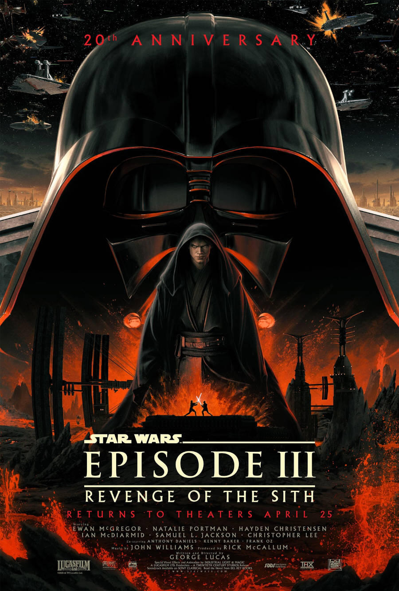
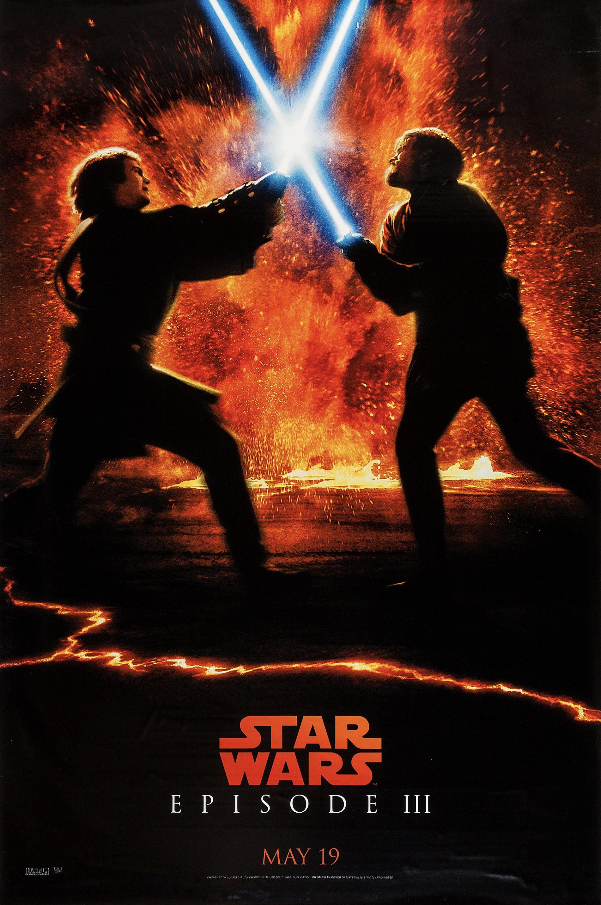
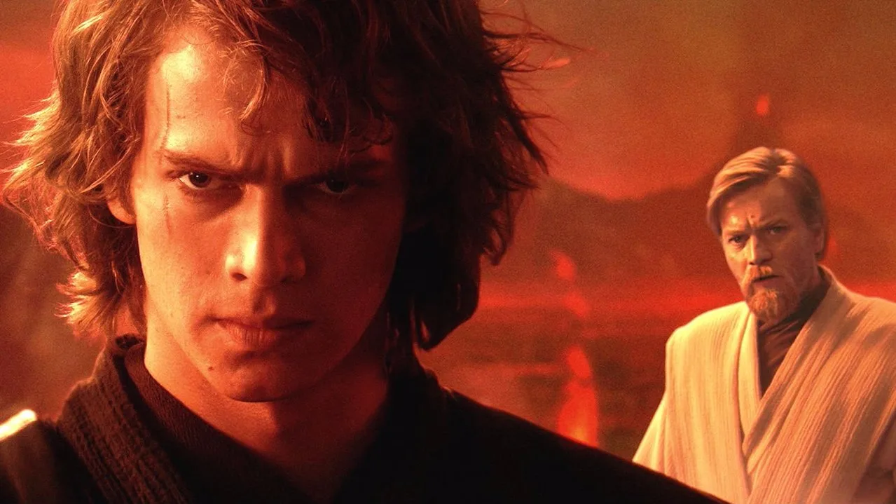

Star Wars: A Sithek bosszúja (2005)
Az előzménytrilógia záródarabjaként A Sithek bosszúja sötétebb és komorabb hangvételű, mint elődei. A történet középpontjában Anakin Skywalker áll, aki a Jedi Rend egyik legtehetségesebb lovagjaként szolgál, miközben egyre erősebben küzd belső démonjaival és a félelemmel szerettei elvesztésétől.

A film elején Anakin és Obi-Wan egy merész küldetésen vesznek részt a szenátust fenyegető Grievous tábornok ellen. Eközben Palpatine kancellár lassan befolyása alá vonja Anakint, kihasználva a fiú félelmét és bizalmatlanságát a Jedi Tanács iránt.

Ahogy Anakin fokozatosan elfordul mestereitől, és enged a sötét oldal csábításának, megtörténik az, amitől minden Jedi tartott: a Galaktikus Köztársaság átalakul a Birodalommá, a Jedik többsége pedig elpusztul a 66-os parancs következtében.

A film egyik legemlékezetesebb jelenete a Mustafar bolygón játszódó párbaj Anakin és Obi-Wan között, mely a szívszorító barátság és árulás tragikus csúcspontja. Anakin végül Darth Vaderré válik, ezzel beteljesítve a sorsát és előkészítve a klasszikus trilógia eseményeit.
A Sithek bosszúja látványos vizuális effektekkel, mély drámaisággal és erős karakterívvel emelkedik ki a trilógia részei közül, és sok rajongó szerint ez a legsikerültebb darab a három közül.